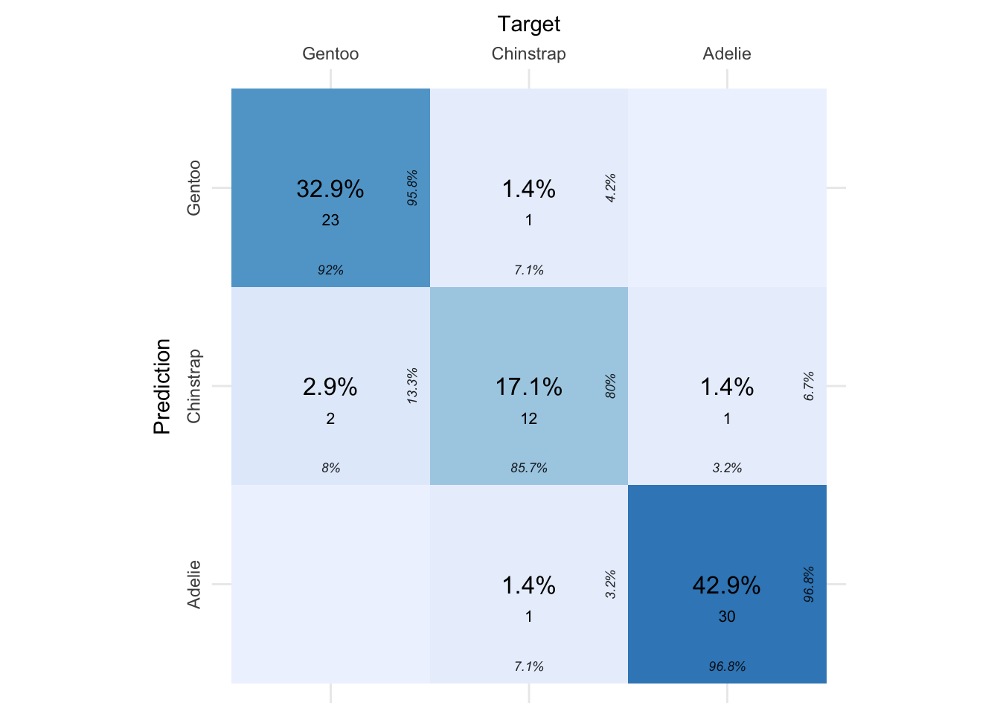
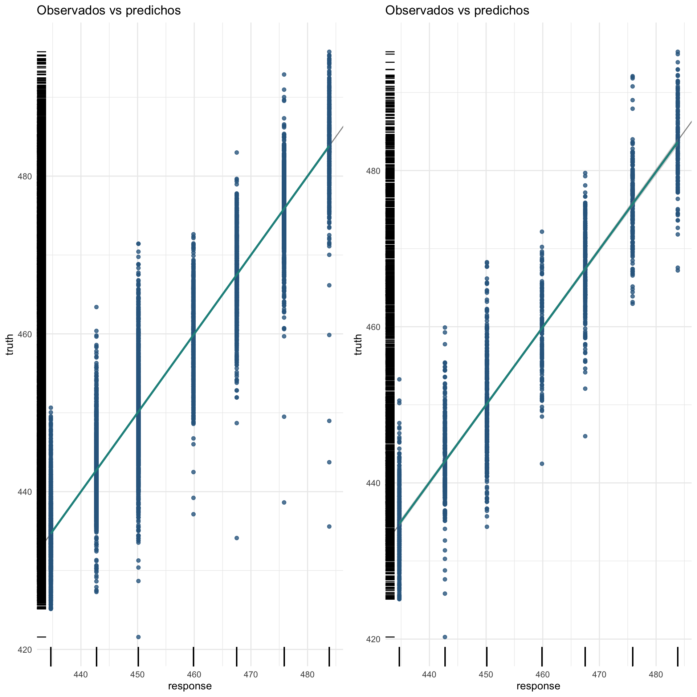
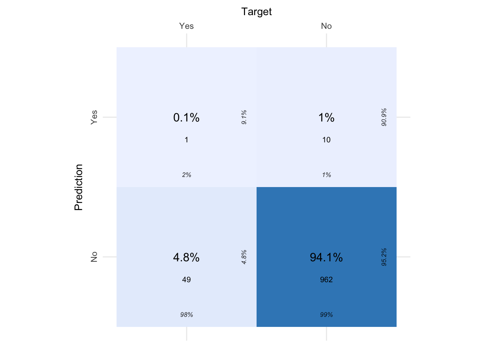
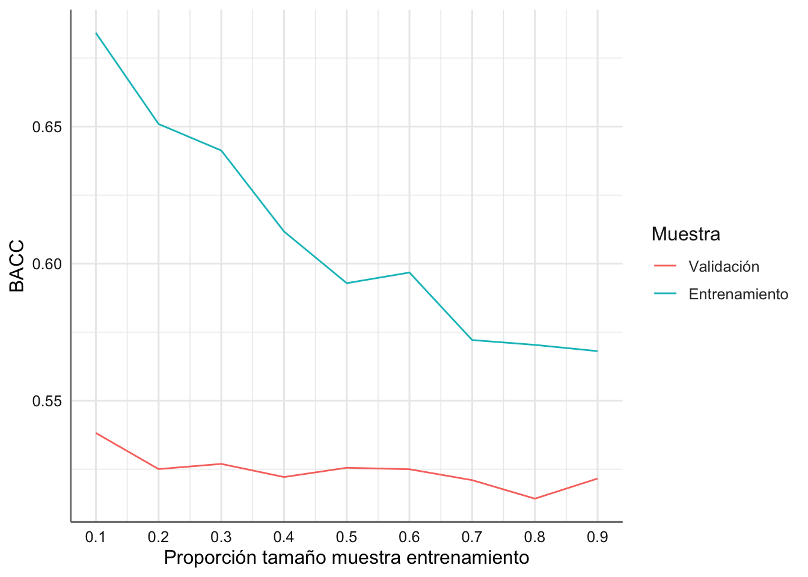
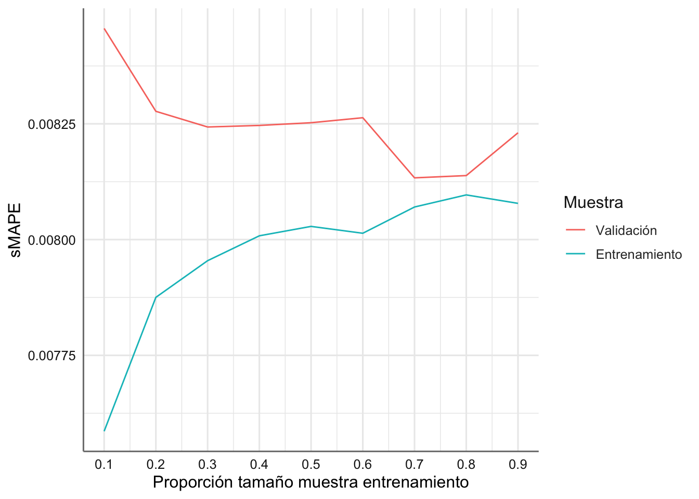

# Paquetes anteriores
library(tidyverse)
library(sjPlot)
library(knitr) # para formatos de tablas
library(skimr)
library(DataExplorer)
library(GGally)
library(gridExtra)
library(ggpubr)
library(cvms)
library(kknn)
theme_set(theme_sjplot2())
# Paquetes AA
library(mlr3verse)
library(mlr3tuning)
library(mlr3tuningspaces)12 Árboles de decisiónn (DT)
Los árboles de decisión son modelos predictivos, englobados dentro de los algoritmos de aprendizaje supervisado no paramétrico, basados en reglas binarias con las que se consiguen repartir las observaciones en función de sus características y predecir así el valor de la variable respuesta bien sea numérica o categórica.
Muchos métodos predictivos generan modelos globales en los que una única ecuación se aplica a todo el espacio muestral. En situaciones prácticas que implican múltiples predictores, que interaccionan entre ellos de forma compleja y no lineal, es muy difícil encontrar un único modelo global que sea capaz de reflejar la relación entre las variables. Con los modelos basados en árboles de decisión resulta más sencillo manejar las interacciones y situaciones con muchos predictores. Es esta característica la que les proporciona gran parte de su potencial.
A lo largo de este documento se explora la forma en que se construyen y predicen los árboles de decisión para problemas de clasificación, que además resultan elementos fundamentales de modelos predictivos más complejos como Random Forest y Gradient Boosting Machine.
Como su propio nombre indica, los árboles de decisión se estructuran en forma de árbol, en la que cada rama representa una decisión sobre una de las variables predictoras proporcionando dos sub-ramas para cada una de las soluciones de la regla binaria asociada a dicha rama. A continuación se presentan algunas de las terminologías más importantes relacionadas con un Árbol de Decisión:
- Nodo raíz: generalmente representa toda la muestra y es el nodo superior del árbol de decisión (raíz del árbol).
- Separación: proceso de división de un nodo en dos o más subnodos.
- Nodo de decisión: es un nodo o subnodo que divide los datos en otros subnodos.
- Nodo terminal: los nodos que no se dividen se denominan nodos terminales; son las salidas finales del árbol de decisión.
- Poda: lo contrario de la separación. Cuando se elimina un subnúcleo de un nodo de decisión, el proceso se denomina poda.
- Subárbol: una subsección de todo el árbol se denomina rama o subárbol.
- Nodo padre: un nodo dividido en subnodos se denomina nodo padre.
- Nodo hijo: cualquier subnodo de un nodo padre se llama nodo hijo.
A continuación se muestra gráficamente la estructura de un árbol de decisión.

En todo el documento iremos detallando la construcción teórica de los árboles de decisión tanto para tareas de clasificación como regresión.
12.1 Árboles de decisión en tareas de clasificación
Para construir un árbol de clasificación, se emplea un método de división binaria recursiva en cuyo proceso es necesario tener en cuenta que:
Todo el conjunto de datos se considera como parte del nodo raíz al comienzo del proceso de división.
Dado que se producen divisiones de tipo binario a cada paso del algoritmo se prefieren los valores de características categóricas en el proceso de construcción. Si los valores son continuos, deben discretizarse antes de construir el modelo.
Las muestras se distribuyen recursivamente en función de las reglas de decisión establecidas con respecto a la predictora considerada en cada paso del algoritmo.
El proceso de división se debe realizar mediante un enfoque estadístico estableciendo una función de pérdida o ganancia que es necesario optimizar.
Antes de presentar el algoritmo completo para la creación del árbol de decisión se presenta el enfoque estadístico para la construcción de las reglas de decisión óptimas.
12.1.1 Medidas de impureza
A la hora de establecer los criterios estadísticos a tener en cuenta en la construcción del árbol de decisión existen varias alternativas, todas ellas con el objetivo de encontrar nodos lo más puros/homogéneos posibles. Antes de presentar las medidas más habituales introducimos el concepto de entropía que está directamente relacionado con la construcción del árbol.
La incertidumbre en nuestro conjunto de datos o la medida del desorden se llama entropía. Su valor describe el grado de aleatoriedad de un nodo concreto, de forma que, cuanto mayor es la entropía, mayor será la aleatoriedad en el conjunto de datos, y por tanto menos influencia tiene la predictora considerada en la división del árbol. La fórmula general de la entropía en un conjunto de datos categóricos con k clases viene dada por:
\[H = \sum_{i=1}^{k} -p_ilog(p_i)\]
donde \(p_i\) es la proporción de observaciones de la categoría \(i\) en el conjunto de datos considerado.
Los métodos de medidas más empleadas son:
- Ratio de error de clasificación. Se define como la proporción de observaciones que no pertenecen a la clase mayoritaria del nodo, definida como:
\[E_m = 1- \underset{k}{max} \text{ } \hat{p}_{mk}\]
donde \(\hat{p}_{mk}\) representa la proporción de observaciones del nodo \(𝑚\) que pertenecen a la clase \(𝑘\). A pesar de la sencillez de esta medida, no es suficientemente sensible para crear buenos árboles, por lo que, en la práctica, no suele emplearse.
- Ganancia de información. La ganancia de información ayuda a determinar el orden en que las predictoras consideradas deben ser utilizadas para dividir un nodo o no. Es simplemente una medida de los cambios en la entropía tras la segmentación de un conjunto de datos basado en una predictora específica. Calcula cuánta información nos proporciona una característica sobre una clase. En función del valor de la ganancia de información, dividimos los nodos y construimos un árbol de decisión. El nodo/atributo con mayor ganancia de información se divide primero en una estructura de árbol, que siempre maximiza el valor de la ganancia de información. La expresión para dicha medida viene dada por:
\[D = - \sum_{k=1}^{K} \hat{p}_{mk} log(\hat{p}_{mk}).\]
Los conocidos como algortimos C4.5 y C5.0 utilizan este criterio para la construcción del árbol.
- Índice de Gini. El índice de Gini, también conocido como impureza de Gini o coeficiente de Gini, mide la probabilidad de que un nuevo valor de una variable aleatoria se clasifique incorrectamente si se clasificara al azar utilizando la distribución de etiquetas de clase del conjunto de datos. Técnicamente cuantifica la varianza total en el conjunto de las \(𝐾\) clases del nodo \(𝑚\), es decir, mide la pureza del nodo mediante la expresión:
\[G_m = \sum_{k=1}^{K} \hat{p}_{mk} (1-\hat{p}_{mk}).\]
Cuando \(\hat{p}_{mk}\) es cercano a 0 o a 1 (el nodo contiene mayoritariamente observaciones de una sola clase), el término correspondiente es muy pequeño. Como consecuencia, cuanto mayor sea la pureza del nodo, menor el valor del índice Gini.
El algoritmo CART (Classification and Regression Tree) utiliza este criterio para la construcción del árbol.
- Ji-cuadrado. Esta aproximación consiste en identificar si existe una diferencia significativa entre los nodos hijos y el nodo parental, es decir, si hay evidencias de que la división consigue una mejora. Para ello, se aplica un test estadístico ji-cuadrado de bondad de ajuste empleando como distribución esperada \(𝐻_0\) la frecuencia de cada clase en el nodo parental. Cuanto mayor el estadístico \(𝜒^2\) , mayor es la evidencia estadística de que existe una diferencia. Los árboles generados con este criterio de división reciben el nombre de CHAID (Chi-square Automatic Interaction Detector).
Independientemente de la medida empleada como criterio de selección de las divisiones, el proceso de construcción del árbol siempre es el mismo:
- Para cada posible división se calcula el valor de la medida considerada en cada uno de los dos nodos resultantes.
- Se suman los dos valores, ponderando cada uno por la fracción de observaciones que contiene cada nodo. Este paso es muy importante, ya que no es lo mismo dos nodos puros con 2 observaciones, que dos nodos puros con 100 observaciones. Si consideramos como \(n_A\) y \(n_B\) el número de observaciones en los nodos A y B resultantes de la división con \(n=n_A+n_B\), y por \(p_A\) y \(p_B\) las medidas de pureza calculadas para cada uno de ellos el criterio de división se basa en:
\[\frac{n_a}{n}p_A + \frac{n_b}{n}p_B\]
- La división con menor o mayor valor (dependiendo de la medida empleada) se selecciona como punto de corte óptimo.
12.1.2 El algortmo CART
El algoritmo CART es uno de los más extendidos en la construcción de árboles de decisión. Este funciona dividiendo primero el conjunto de entrenamiento por características \(k\) y umbrales \(t_k\). Más concretamente, de entre todos los pares \((k, t_k)\) se eligen los que producen los subconjuntos más puros ponderados por su tamaño.
La función de pérdida en la que se basa el funcionamiento del algoritmo viene dada por:
\[J(k, t_k)=\frac{n_a}{n}G_A + \frac{n_B}{n}G_B\]
donde \(G_A\) y \(G_B\) son respectivamente las medidas de impureza asociadas con cada uno de los nodos resultantes, que en este caso es el índice de Gini.
Una vez que el algoritmo CART divide con éxito los datos de entrenamiento iniciales en dos subconjuntos, hace lo mismo con ambos subconjuntos. El algoritmo se detiene cuando no puede encontrar una división que reduzca la impureza.
Al algoritmo CART no le importa si su división actual conduce a una hoja óptima en la parte inferior. Sólo le importa encontrar la mejor división posible en la hoja actual. En este sentido, no necesariamente da lugar a una solución óptima. Por desgracia, se sabe que encontrar el árbol óptimo es un problema NP-Completo con una complejidad de \(O(exp(n))\).
12.1.3 Tratamiento de sobreajuste
El proceso de construcción de árboles tiende a reducir rápidamente el error de entrenamiento, es decir, el modelo se ajusta muy bien a las observaciones empleadas como entrenamiento. Como consecuencia, se genera un sobreajuste que reduce su capacidad predictiva al aplicarlo a nuevos datos. La razón de este comportamiento radica en la facilidad con la que los árboles se ramifican adquiriendo estructuras complejas. De hecho, si no se limitan las divisiones, todo árbol termina ajustándose perfectamente a las observaciones de entrenamiento creando un nodo terminal por observación. Las dos estrategias más habituales para prevenir este problema es limitar el tamaño del árbol (parada temprana) y el proceso de podado (pruning).
Parada temprana
El tamaño final que adquiere un árbol puede controlarse mediante reglas de parada que detengan la división de los nodos dependiendo de si se cumplen o no determinadas condiciones. El nombre de estas condiciones puede variar dependiendo del software o librería empleada, pero suelen estar presentes en todos ellos.
Observaciones mínimas para división: define el número mínimo de observaciones que debe tener un nodo para poder ser dividido. Cuanto mayor el valor, menos flexible es el modelo.
Observaciones mínimas de nodo terminal: define el número mínimo de observaciones que deben tener los nodos terminales. Su efecto es muy similar al de observaciones mínimas para división.
Profundidad máxima del árbol: define la profundidad máxima del árbol, entendiendo por profundidad máxima el número de divisiones de la rama más larga (en sentido descendente) del árbol. Cuanto menor el valor, menos flexible es el modelo.
Número máximo de nodos terminales: define el número máximo de nodos terminales que puede tener el árbol. Una vez alcanzado el límite, se detienen las divisiones. Su efecto es similar al de controlar la profundidad máxima del árbol.
Reducción mínima de error: define la reducción mínima de error que tiene que conseguir una división para que se lleve a cabo.
Todos estos parámetros son lo que se conoce como hiperparámetros porque no se aprenden durante el entrenamiento del modelo. Su valor tiene que ser especificado por el usuario en base a su conocimiento del problema y mediante el uso de estrategias de validación.
Podado del árbol
La estrategia de controlar el tamaño del árbol mediante reglas de parada tiene un inconveniente, el árbol crece seleccionando la mejor división en cada momento. Al evaluar las divisiones sin tener en cuenta las que vendrán después, nunca se elige la opción que resulta en el mejor árbol final, a no ser que también sea la que genera en ese momento la mejor división. A este tipo de estrategias se les conoce como greedy.
Una alternativa no greedy que consigue evitar el sobreajuste consiste en generar los árboles más grandes posibles, sin establecer condiciones de parada más allá de las necesarias por las limitaciones computacionales, y después podarlos (pruning), mantener la estructura que consigue un test error bajo. La selección del sub-árbol óptimo puede hacerse mediante validación cruzada, sin embargo, dado que los árboles crecen lo máximo posible (tienen muchos nodos terminales) no suele ser viable estimar el test error de todas las posibles sub-estructuras que se pueden generar. En su lugar, se recurre a la “poda de complejidad de costes” o “poda del eslabón más débil”.
La poda de complejidad por costes es un método de penalización de tipo “coste” mas “penalización”, similar al empleado en Ridge Regression o Lasso. En este caso, se busca el sub-árbol \(𝑇\) que minimiza la ecuación:
\[\text{coste} + \alpha|T|\]
donde \(|T|\) es el número de nodos terminales del árbol. El término de penalización, evalúa los modelos en función del número de nodos terminales (a mayor número, mayor penalización). El grado de penalización se determina mediante el parámetro de ajuste \(\alpha\). Cuando \(\alpha=0\), la penalización es nula y el árbol resultante es equivalente al árbol original. A medida que se incrementa dicho parámetro, la penalización es mayor y, como consecuencia, los árboles resultantes son de menor tamaño. El valor óptimo de \(\alpha\) puede identificarse mediante validación cruzada.
12.1.4 Predicción y evaluación del modelo
Tras la creación de un árbol, las observaciones de entrenamiento quedan agrupadas en los nodos terminales. Para predecir una nueva observación se recorre el árbol en función del valor de sus predictores hasta llegar a uno de los nodos terminales. En el caso de clasificación, suele emplearse la moda de la variable respuesta de los elementos que aparecen en el nodo terminal como valor de predicción. Lo habitual además es acompañar dicho valor con el porcentaje de cada clase en el nodo terminal, lo que aporta información sobre la confianza de la predicción, en caso de que los porcentajes de las diferentes clases se encuentren muy próximos.
12.2 Árboles de decisión en tareas de regresión
Los árboles de regresión son el subtipo de árboles de predicción que se aplica cuando la variable respuesta es continua. En términos generales, en el entrenamiento de un árbol de regresión, las observaciones se van distribuyendo por bifurcaciones (nodos) generando la estructura del árbol hasta alcanzar un nodo terminal.
El proceso de entrenamiento de un árbol de decisión para problemas de regresión es similar al del proceso de clasificación donde se produce una división sucesiva del espacio de los predictores generando regiones no solapantes (nodos terminales) \(𝑅_1\) , \(𝑅_2\) , \(𝑅_3\) , …, \(𝑅_𝑗\) . Aunque, desde el punto de vista teórico las regiones podrían tener cualquier forma, si se limitan a regiones rectangulares (de múltiples dimensiones), se simplifica en gran medida el proceso de construcción y se facilita la interpretación.
12.2.1 Medidas de impureza
En los árboles de regresión, el criterio empleado con más frecuencia para identificar las divisiones es la suma de cuadrados residual (SCE). El objetivo es encontrar las \(𝐽\) regiones \((𝑅_1 ,..., 𝑅_𝑗)\) que minimizan la suma de cuadrados del error total:
\[SCE = \sum_{j=1}^J \sum_{i \in R_j} (𝑦_𝑖−\hat{y}_{R_j})^2,\]
donde \(\hat{y}_{R_j}\) es la media de la variable respuesta en la región \(𝑅_𝑗\) . Una descripción menos técnica equivale a decir que se busca una distribución de regiones tal que, el sumatorio de las desviaciones al cuadrado entre las observaciones y la media de la región a la que pertenecen sea lo menor posible.
Desafortunadamente, no es posible considerar todas las posibles particiones del espacio de los predictores. Por esta razón, se recurre a lo que se conoce como división binaria recursiva. Esta solución sigue la misma idea que la selección de predictores stepwise (backward o fordward) en regresión lineal múltiple, no evalúa todas las posibles regiones pero, alcanza un buen balance computación-resultado.
12.2.2 Algoritmo CART para problemas de regresión
EL algoritmo CART para problemas de regresión se basa en el método de división binaria recursiva cuyo objetivo es encontrar, en cada iteración, el predictor \(𝑋_𝑗\) y el punto de corte (umbral) \(𝑠\) tal que, si se distribuyen las observaciones en las regiones \({𝑋|𝑋𝑗<𝑠}\) y \({𝑋|𝑋𝑗≥𝑠}\) , se consigue la mayor reducción posible en la suma de cuadrados de los residuos (SCE). El algoritmo seguido es:
El proceso se inicia en lo más alto del árbol, donde todas las observaciones pertenecen a la misma región.
Se identifican todos los posibles puntos de corte \(𝑠\) para cada uno de los predictores \((𝑋_1, 𝑋_2 ,..., 𝑋_𝑝)\). En el caso de predictores cualitativos, los posibles puntos de corte son cada uno de sus niveles. Para predictores continuos, se ordenan de menor a mayor sus valores, empleándose el punto intermedio entre cada par de valores como punto de corte.
Se calcula la SCR total que se consigue con cada posible división identificada en el paso 2:
\[\sum_{i: x_i \in R_1(j,s)} (y_i-\hat{y}_{R_1})^2 +\sum_{i: x_i \in R_2(j,s)} (y_i-\hat{y}_{R_2})^2\]
donde el primer término es la SCE de la región 1 y el segundo término es la SCE de la región 2, siendo cada una de las regiones el resultado de separar las observaciones acorde al predictor \(𝑗\) y valor \(𝑠\).
Se selecciona el predictor \(𝑋_𝑗\) y el punto de corte \(s\) que resulta en la menor SCE total, es decir, que da lugar a las divisiones más homogéneas posibles. Si existen dos o más divisiones que consiguen la misma mejora, la elección entre ellas es aleatoria.
Se repiten de forma iterativa los pasos 1 a 4 para cada una de las regiones que se han creado en la iteración anterior hasta que se alcanza alguna norma de parada. Algunas de las más empleadas son: alcanzar una profundidad máxima, que ninguna región contenga menos de n observaciones, que el árbol tenga un máximo de nodos terminales o que la incorporación del más nodos no reduzca el error en al menos un % mínimo.
Para mejorar el funcionamiento de este algoritmo se suelen incorporar estrategias para evitar evaluar todos los posibles puntos de corte. Por ejemplo, para predictores continuos, primero se crea un histograma que agrupa los valores y luego se evalúan los puntos de corte de cada región del histograma.
12.2.3 Tratamiento del sobreajuste
El tratamiento del sobreajuste utiliza los mismos procedimientos que en el caso de los árboles de decisión para clasificación. Leer el cuaderno anterior para conocer todos los detalles.
12.2.4 Predicción y evaluación del modelo
Tras la creación de un árbol, las observaciones de entrenamiento quedan agrupadas en los nodos terminales. Para predecir una nueva observación, se recorre el árbol en función de los valores que tienen sus predictores hasta llegar a uno de los nodos terminales. En el caso de regresión, el valor predicho suele ser la media de la variable respuesta de las observaciones de entrenamiento que están en ese mismo nodo. Si bien la media es el valor más empleado, se puede utilizar cualquier otro (mediana, cuantil…).
Sin embargo, la predicción de un árbol de decisión para regresión puede verse como una variante de vecinos cercanos en la que, solo las observaciones que forman parte del mismo nodo terminal que la observación predicha, tienen influencia. Siguiendo esta aproximación, la predicción del árbol se define como la media ponderada de todas las observaciones de entrenamiento, donde el peso de cada observación depende únicamente de si forma parte o no del mismo nodo terminal.
Imaginemos que tenemos un árbol con cuatro nodos terminales con observaciones y valores de la respuesta para la muestra de entrenamiento:
- nodo 1: 1 (10), 3 (24), 7 (16)
- nodo 2: 4 (8), 10 (14)
- nodo 3: 2 (18), 3 (24), 5 (2), 9 (20)
- nodo 4: 6 (9), 8 (10)
de forma que realizamos la predicción de una nueva observación y esta cae en el nodo tres. La predicción viene dada entonces por la media ponderada del número de observaciones:
\[\hat{\mu} = 0.25*18 + 0.25*24 + 0.25*2 + 0.25*20 = 16\]
12.3 Ventajas y desventajas de los árboles de decisión
Entre las ventajas y desventajas del uso de árboles de decisión podemos considerar:
Ventajas
Los árboles son fáciles de interpretar aún cuando las relaciones entre predictores son complejas.
Los modelos basados en un solo árbol (no es el caso de random forest, boosting) se pueden representar gráficamente aún cuando el número de predictores es mayor de 3.
Los árboles pueden, en teoría, manejar tanto predictores numéricos como categóricos sin tener que crear variables dummy o one-hot-encoding. En la práctica, esto depende de la implementación del algoritmo que tenga cada librería.
Al tratarse de métodos no paramétricos, no es necesario que se cumpla ningún tipo de distribución específica.
Por lo general, requieren mucha menos limpieza y preprocesado de los datos en comparación con otros métodos de aprendizaje estadístico (por ejemplo, no requieren estandarización).
No se ven muy influenciados por observaciones anómalas.
Si para alguna observación el valor de un predictor no está disponible, a pesar de no poder llegar a ningún nodo terminal, se puede conseguir una predicción empleando todas las observaciones que pertenecen al último nodo alcanzado. La precisión de la predicción se verá reducida pero al menos podrá obtenerse.
Son muy útiles en la exploración de datos, ya que permiten identificar de forma rápida y eficiente las variables (predictores) más importantes.
Son capaces de seleccionar predictores de forma automática.
Desventajas
La capacidad predictiva de los modelos basados en un único árbol es bastante inferior a la conseguida con otros modelos. Esto es debido a su tendencia al sobreajuste y a la alta varianza. Sin embargo, existen técnicas más complejas que, haciendo uso de la combinación de múltiples árboles (bagging, random forest, boosting), consiguen mejorar en gran medida este problema.
Son sensibles a datos de entrenamiento desbalanceados (una de las clases domina sobre las demás).
Cuando tratan con predictores continuos, pierden parte de su información al categorizarlos en el momento de la división de los nodos.
Los predictores continuos tienen mayor probabilidad de contener, solo por azar, algún punto de corte óptimo, por lo que suelen verse favorecidos en la creación de los árboles.
No son capaces de extrapolar fuera del rango valores observados para los predictores en los datos de entrenamiento.
12.4 Árboles de decisión en mlr3
Antes de comenzar con la implementación de los DT en mlr3 vamos a cargar las librerías necesarias:
Para implementar los árboles de decisión en el paquete mlr3 disponemos de varias funciones tanto para las tareas de clasificación como de regresión, pero nosotros nos centraremos en los algoritmos más básicos:
classif.rpartpara la obtención de árboles de decisión en tareas de clasificación.regr.rpartpara la obtención de árboles de decisión en tareas de regresión.
que utilizan como base las funciones definidas en la librería rpart.
Podemos cargar los algoritmos con su hiperparámetros por defecto con el código siguiente:
En este caso los hiperparámetros de ambos algoritmos son los mismos. A continuación se muestran todos ellos:
[1] "cp" "keep_model" "maxcompete" "maxdepth"
[5] "maxsurrogate" "minbucket" "minsplit" "surrogatestyle"
[9] "usesurrogate" "xval" Los parámetros más relevantes son:
cp: parámetro de complejidad. Cualquier división que no disminuya la falta general de ajuste en un factor de cp no es tenida en cuenta. Por ejemplo, con la división de anova, esto significa que el R cuadrado general debe aumentar en cp en cada paso. El papel principal de este parámetro es para ahorrar tiempo de cálculo eliminando divisiones que obviamente no valen la pena. Básicamente, el usuario informa al programa que cualquier división que no mejora el ajuste por cp probablemente será eliminado mediante validación cruzada, y que por lo tanto el programa no necesita perseguirlo. La opción por defecto es 0.01 y puede tomar cualquier valor en el rango \([0, 1]\).maxcompete: el número de divisiones de competidores retenidas en la salida. Es útil saber no solo qué división se eligió, pero qué variable quedó en segundo, tercer lugar, etc. La opción por defecto es 4 con valores en el intervalo \([0, \infty]\).maxdepth: Establece la profundidad máxima de cualquier nodo del árbol final, con el nodo raíz contado como profundidad 0. Los valores superiores a 30 rpart darán resultados sin sentido en máquinas de 32 bits. Por defecto se utiliza el valor 30 con un rango de valores posibles en el intervalo \([1, 30]\).maxsurrogate: número de divisiones sustitutas retenidas en la salida. Si se establece en cero, el tiempo de cálculo se reducirá, ya que aproximadamente la mitad del tiempo de cálculo (aparte del de configuración) se utiliza en la búsqueda de divisiones sustitutas. Por defecto se utiliza el valor de 5 con un rango de valores posibles en el intervalo \([0, \infty]\).minbucket: el número mínimo de observaciones en cualquier nodo terminal. Si solo se especifica uno de minbucket o minsplit, el código establece minsplit en minbucket*3 o minbucket en minsplit/3, según corresponda. No tiene valor por defecto pero el rango de valores posibles en el intervalo \([1, \infty]\).minsplit: el número mínimo de observaciones que deben existir en un nodo para que se intente una división. El valor por defecto es 20 con una rango de valores posibles en el intervalo \([1, \infty]\).surrogatestyle: controla la selección de la mejor sustituto. Si se establece en 0 (predeterminado), el programa usa el número total de clasificaciones correctas para una posible variable sustituta; si se establece en 1, usa el porcentaje correcto, calculado sobre los valores no faltantes del sustituto. La primera opción penaliza más severamente las covariables con una gran cantidad de valores faltantes. El valor por defecto es 0 con valores posibles en el rango \([0, 1]\).usesurrogate: cómo utilizar sustitutos en el proceso de división. 0 significa solo visualización; una observación con un valor faltante para la regla de división principal no se envía más abajo en el árbol. 1 significa utilizar sustitutos, en orden, para dividir a los sujetos a los que les falta la variable principal; si faltan todos los sustitutos, la observación no se divide. Para el valor 2, si faltan todos los sustitutos, envíe la observación en la dirección mayoritaria. Un valor de 0 corresponde a la acción del árbol, y 2 a las recomendaciones de Breiman y otros (1984). El valor por defecto es 2 con valores en el intervalo \([0, 2]\).xval: número de validaciones cruzadas. El valor por defecto es 10 con valores en el rango \([0, \infty]\).
12.5 Bancos de datos
Para ejemplificar el uso de estos algoritmos vamos a utilizar los bancos de datos stroke, penguins para tareas de clasificación, y electricity para tareas de regresión. Dado que los algoritmos DT permiten trabajar con factores, y predictores sin escalar no resulta necesario realizar dicha tarea de preprocesamiento. Lo que si resulta necesaria es imputar los valores perdidos como veremos en el punto siguiente.
12.5.1 Stroke
Cargamos los datos y definimos la tarea correspondiente
Creamos ahora la división de muestras:
# Generamos variable de estrato
tsk_stroke$col_roles$stratum <- "stroke"
# Fijamos semilla para asegurar la reproducibilidad del modelo
set.seed(432)
# Creamos la partición
splits = mlr3::partition(tsk_stroke, ratio = 0.8)
# Muestras de entrenamiento y validación
tsk_train_stroke = tsk_stroke$clone()$filter(splits$train)
tsk_test_stroke = tsk_stroke$clone()$filter(splits$test)12.5.2 Penguins
El banco de datos ya ha sido descrito en detalle en temas anteriores pero en este caso vamos a utilizar el que se encuentra disponible en la librería mlr3. Definimos la tarea.
Creamos ahora las muestras de entrenamiento y validación:
# Generamos variable de estrato
tsk_penguins$col_roles$stratum <- "sex"
# Fijamos semilla para asegurar la reproducibilidad del modelo
set.seed(432)
# Creamos la partición
splits = mlr3::partition(tsk_penguins, ratio = 0.8)
# Muestras de entrenamiento y validación
tsk_train_penguins = tsk_penguins$clone()$filter(splits$train)
tsk_test_penguins = tsk_penguins$clone()$filter(splits$test)12.5.3 Electricity
Cargamos los datos y generamos las muestras de entrenamiento y validación.
Ahora la división de muestras:
# Fijamos semilla para asegurar la reproducibilidad del modelo
set.seed(432)
# Creamos la partición
splits = mlr3::partition(tsk_electricity, ratio = 0.8)
# Muestras de entrenamiento y validación
tsk_train_electricity = tsk_electricity$clone()$filter(splits$train)
tsk_test_electricity = tsk_electricity$clone()$filter(splits$test)12.6 Nuestros primeros modelos
En primer lugar consideramos modelos básicos de DT para los dos bancos de datos presentados. Trabajaremos con las opciones por defecto para poder comparar los resultados con el modelo optimizado que veremos posteriormente. También compararemos los resultados con otros modelos de clasificación de los estudiados hasta ahora.
12.6.1 Stroke
En primer lugar generamos el algoritmo DT para este banco de datos y entrenamos el modelo. Dado que los datos preprocesados se generan a través de un graphlearner no podemos representar directamente la solución del árbol de decisión. Después de ver la solución habitual veremos como completar los datos para tener que definir únicamente un learner y poder representar la solución mediante la función autoplot.
# Preprocesamiento
pp_stroke = po("imputemedian", affect_columns = selector_type("numeric"))
# Modelo de aprendizaje combinando preprocesado y algoritmo
ldt_classif_stroke = as_learner(pp_stroke %>>% lrn("classif.rpart", keep_model = TRUE, predict_type = "prob"))
# Entrenamiento del modelo
ldt_classif_stroke$train(tsk_train_stroke)Podemos ver el funcionamiento del algoritmo obteniendo el árbol de clasificación proporcionado en la fase de entrenamiento.
n= 4088
node), split, n, loss, yval, (yprob)
* denotes terminal node
1) root 4088 199 No (0.95132094 0.04867906) *Como se puede ver el algoritmo no es capaz de realizar ninguna división. Esto se puede deber a dos motivos: i) este algoritmo no funciona bien para este banco de datos, ii) hay que modificar los hiperparámetros del modelo porque resultan muy restrictivos. En el segundo caso podemos buscar una solución óptima y ver que tipo de árbol de decisión resulta.
12.6.2 Penguins
Procedemos directamente con el modelo ya que los datos han sido preparados. Al cargar directamente el learner podemos utilizar la función autoplot para representar la solución.
Vemos el árbol obtenido:
n= 274
node), split, n, loss, yval, (yprob)
* denotes terminal node
1) root 274 153 Adelie (0.44160584 0.19708029 0.36131387)
2) flipper_length< 207.5 170 51 Adelie (0.70000000 0.30000000 0.00000000)
4) bill_length< 43.35 120 4 Adelie (0.96666667 0.03333333 0.00000000) *
5) bill_length>=43.35 50 3 Chinstrap (0.06000000 0.94000000 0.00000000) *
3) flipper_length>=207.5 104 5 Gentoo (0.01923077 0.02884615 0.95192308) *Aunque seguramente resultará más fácil mediante un gráfico:
El modelo proporciona tres nodos terminales con 120, 50, y 104 casos respectivamente. Cada uno de los nodos terminales viene determinado principalmente por una especie en particular. El árbol selecciona en primer lugar como predictor la variable flipper_length con valor de corte 207.5, y posteriormente los menores a ese valor se subdividen de acuerdo a bill_length con valor de corte 43.35. De esta forma podemos establecer que:
- La especie
Adeliese caracteriza principalmente porflipper_lengthmenor a 207.5 ybill_lengthmenor a 43.35. - La especie
Chinstrapse caracteriza principalmente porflipper_lengthmenor a 207.5 ybill_lengthmayo o igual a 43.35. - La especie
Gentoose caracteriza principalmente porflipper_lengthmayor o igual a 207.5.
Sin embargo, la clasificación no es perfecta porque podemos ver que los nodos terminales combinan resultados de diferentes especies. Podemos ver los porcentajes de cada especie en cada nodo terminal con:
n= 274
node), split, n, loss, yval, (yprob)
* denotes terminal node
1) root 274 153 Adelie (0.44160584 0.19708029 0.36131387)
2) flipper_length< 207.5 170 51 Adelie (0.70000000 0.30000000 0.00000000)
4) bill_length< 43.35 120 4 Adelie (0.96666667 0.03333333 0.00000000) *
5) bill_length>=43.35 50 3 Chinstrap (0.06000000 0.94000000 0.00000000) *
3) flipper_length>=207.5 104 5 Gentoo (0.01923077 0.02884615 0.95192308) *donde podemos ver que el nodo terminal identificado como 4) tiene un 96.67% de muestras de Adelie, un 3.33% Chinstrap y un 0% de Gentoo. Los * indican los nodos terminales del árbol obtenido. Antes de valorar la clasificación obtenida vamos a estudiar la relevancia de cada predictora en la construcción del árbol. Para ello utilizamos el método importance().
flipper_length bill_length bill_depth body_mass island
102.07243 99.79389 77.64481 71.39752 58.01049 La tabla proporciona el orden de importancia de las variables en la construcción del árbol de decisión. De las cinco predictoras disponibles la solución solo considera dos de ellas. Podemos identificar las predictoras seleccionadas con el código:
Ahora podemos estudiar la capacidad explicativa del modelo. Como no he os solicitado predecir la probabilidad no podemos obtener los scores asociados (bbrier y auc):
# Predicción de la muestra de entrenamiento y validación
pred_train = ldt_classif_penguins$predict(tsk_train_penguins)
pred_test = ldt_classif_penguins$predict(tsk_test_penguins)
# scores de validación
measures = msrs(c("classif.acc", "classif.bacc", "classif.bbrier", "classif.auc"))
# Muestra de entrenamiento
pred_train$score(measures) classif.acc classif.bacc classif.bbrier classif.auc
0.9562044 0.9430160 NaN NaN classif.acc classif.bacc classif.bbrier classif.auc
0.9285714 0.9149616 NaN NaN El algoritmo se comporta bastante bien ya que alcanzamos un porcentaje de clasificación correcta del 91.5% (similar al de modelos anteriores para estos datos). Podemos estudiar la matriz de confusión:
# Cargamos la librería para representar la matriz de confusión
cm = confusion_matrix(pred_test$truth, pred_test$response)
plot_confusion_matrix(cm$`Confusion Matrix`[[1]]) 
Podemos ver que los errores de clasificación en cada especie son a lo sumo de dos ejemplares, lo que indica que con tan solo esas dos predictoras somos capaces de construir un modelo con una gran capacidad de clasificación/predicción.
12.6.3 Electricity
Para finalizar este apartado de modelos iniciales vamos a finalizar con el primer árbol de decisión para un modelo de regresión. En este caso no tenemos valore perdidos por lo que podemos implementar directamente el algoritmo de aprendizaje.
Veamos la solución gráfica del árbol:
Para este conjunto de datos el árbol de decisión obtenido es bastante más complejo con 7 nodos terminales. Lo que puede resultar más curioso es que se utiliza la misma variable en diferentes niveles del árbol. El algoritmo determina en función de las subdivisiones que va realizando si una variable ya utilizada debe utilizarse de nuevo con unos puntos de corte distintos aunque siempre consistentes con lo decidido en las ramas superiores). De hecho, en los diagramas de caja podemos observar que el nodo terminal con mayores valores de PE se corresponde con la regla de decisión AT menor que 8.725, que es una combinación de los resultados de las divisiones anteriores. Por otro lado, el nodo terminal con menores valores de PE se corresponde con la regla de decisión AT mayor o igual a 23.055 y V mayor o igual a 66. Podemos ver la relevancia de las predictoras con:
A partir de dichos valores podemos valorar la importancia relativa en términos de porcentaje mediante el código:
AT V AP RH
44.407595 31.604609 14.005243 9.982554 Podemos ver que AT tiene una importancia relativa del 44.40%. Además podemos conocer el valor medio estimado de la respuesta para cada nodo sin más que ver el modelo ajustado.
n= 7655
node), split, n, deviance, yval
* denotes terminal node
1) root 7655 2222770.00 454.3762
2) AT>=18.225 4398 320007.40 441.9419
4) AT>=23.055 2959 113057.40 437.9514
8) V>=66.21 1759 38622.84 434.6881 *
9) V< 66.21 1200 28243.12 442.7350 *
5) AT< 23.055 1439 62944.99 450.1473 *
3) AT< 18.225 3257 304572.80 471.1666
6) AT>=11.905 1812 71524.42 464.7302
12) AT>=15.545 656 18707.28 459.8600 *
13) AT< 15.545 1156 28428.50 467.4939 *
7) AT< 11.905 1445 63851.74 479.2377
14) AT>=8.725 832 21797.93 475.8558 *
15) AT< 8.725 613 19622.58 483.8278 *En la última columna aparecen los valores estimados de la respuesta PE dentro de cada nodo del árbol. podemos estudiar ahora las precisiones de las estimaciones con el análisis de las predicciones tanto para la muestra de entrenamiento como la de validación.
# Predicción de la muestra de entrenamiento
pred_train = ldt_regr_electricity$predict(tsk_train_electricity)
# Predicción de la muestra de validación
pred_test = ldt_regr_electricity$predict(tsk_test_electricity)
# Scores de validación
measures = msrs(c("regr.rsq", "regr.mse", "regr.smape"))
# Valores de validación entrenamiento y validación
pred_train$score(measures) regr.rsq regr.mse regr.smape
0.901758942 28.526091659 0.009117687 regr.rsq regr.mse regr.smape
0.902015151 28.884458772 0.009251825 Los resultados son muy buenos, incluso mejorando los que vimos para este mismo conjunto de datos con otros algoritmos. La ventaja principal es que la selección de predictoras se hace automáticamente con la construcción del árbol. Por último analizamos los gráficos de predicción (más concretamente el de valores observados versus valores predichos) para comprender de forma más precisa el proceso de predicción en los modelos de árboles. Para ello realizamos los gráficos siguientes.
# Muestra de entrenamiento
p1 = autoplot(pred_train, type = "xy") + labs(title = "Observados vs predichos")
# Muestra de validación
p2 = autoplot(pred_test, type = "xy") + labs(title = "Observados vs predichos")
ggarrange(p1, p2, ncol = 2)
Como se puede ver tanto el gráfico de la muestra de entrenamiento como de validación la predicción no representa una nube de untos como en modelos anteriores de regresión, sino que únicamente se predice un valor por cada nodo terminal presenten el modelo. En este caso hay 7 nodos terminales y por eso solo tenemos 7 valores predichos, o que provoca que aparezcan 7 columnas de predicción y no una nube de puntos. Este efecto en la predicción es debida a que no tenemos una ecuación que nos proporcione valores, sino únicamente nodos donde todas las observaciones alojadas en él se les asigna el mismo valor de predicción, que en este caso es el valor medio de la respuesta para todas las observaciones en ese nodo.
En el punto siguiente tratamos de mejorar los modelos obtenidos en este bloque mediante un búsqueda óptima de los hiperparámetros del modelo.
12.7 Optimizando los modelos
Para el proceso de optimización de los modelos vamos a considerar únicamente los parámetros cp, minsplit y maxdepth. Aunque este algoritmo permite configurar muchos hiperparámetros nos centramos en estos para buscar una mejora sobre los modelos básicos aunque esta sea mínimo. No buscamos mejorar en exceso el modelo sino ver como funciona la selección de hiperparámetros en este modelo de aprendizaje.
12.7.1 Stroke
A continuación se muestra el código de optimización para el banco de datos Stroke. Recordemos que con las opciones por defecto no resulta posible obtener ningún árbol de decisión. Para el parámetro cp utilizaremos la escala logaritmo para la búsqueda del óptimo. Para la profundidad máxima del árbol consideramos el intervalo \([3, 8]\) para evitar tener un árbol demasiado pequeño o demasiado grande. Por último, consideramos que el tamaño mínimo de los nodos terminales debe estar en el intervalo \([5, 50]\). Consideramos una evaluación de 30 iteraciones debido al tamaño de la base de datos.
ldt_classif_stroke = lrn("classif.rpart", keep_model = TRUE, predict_type = "prob",
cp = to_tune(1e-04, 1, logscale = TRUE),
maxdepth = to_tune(3, 8),
minsplit = to_tune(5, 50)
)
gr_stroke = pp_stroke %>>% ldt_classif_stroke
gr_stroke = GraphLearner$new(gr_stroke)
# Fijamos semilla para reproducibilidad del proceso
set.seed(123)
# Definimos instancia de optimización fijando el número de evaluaciones
instance = tune(
tuner = tnr("random_search"),
task = tsk_stroke,
learner = gr_stroke,
resampling = rsmp("cv", folds = 5),
measures = msr("classif.bacc"),
term_evals = 30
)Veamos los resultados obtenidos:
[1] TRUE$imputemedian.affect_columns
selector_type("numeric")
$classif.rpart.keep_model
[1] TRUE
$classif.rpart.xval
[1] 0
$classif.rpart.cp
[1] 0.0003562633
$classif.rpart.maxdepth
[1] 6
$classif.rpart.minsplit
[1] 10classif.bacc
0.5099052 El proceso de optimización ha finalizado encontrando los valores óptimos de cp igual a 0.0003562633, minsplit igual 10, y maxdepth igual a 6. El porcentaje de clasificación correcta ponderada es del 50.9% mejorando los resultados del modelo por defecto, pero no mucho los de otros modelos de clasificación vistos anteriormente. El modelo sigue siendo bastante pobre en términos predictivos. Utilizamos los valores obtenidos para establecer un nuevo árbol de decisión:
# Nuevo modelo
ldt_classif_stroke = lrn("classif.rpart", keep_model = TRUE, predict_type = "prob",
cp = instance$result_x_domain$classif.rpart.cp,
maxdepth = instance$result_x_domain$classif.rpart.maxdepth,
minsplit = instance$result_x_domain$classif.rpart.minsplit
)
gr_stroke = pp_stroke %>>% ldt_classif_stroke
gr_stroke = GraphLearner$new(gr_stroke)
# Entrenamiento del modelo
gr_stroke$train(tsk_train_stroke)Para representar la solución utilizamos la librería rpart.plot:
En el caso de árboles de clasificación binaria la información presentada en los nodos terminales es:
- La categoría predicha para ese nodo
- La probabilidad predicha de la clase de interés (en este caso
Yes). - El porcentaje de observaciones en el nodo.
Dado que los sujetos que sufren un ictus (249) es muy bajo en comparación con los que no (4861) es lógico que los porcentaje de observaciones en los nodos terminales identificados con Yes sean muy bajos. Podemos ver las reglas de clasificación:
stroke
0.00 when age is 57 to 68 & avg_glucose_level is 110 to 121 & smoking_status is never smoked
0.01 when age < 57
0.04 when age >= 68 & avg_glucose_level < 251 & ever_married is No & hypertension is No & bmi >= 29
0.05 when age is 57 to 68 & avg_glucose_level < 110
0.09 when age is 57 to 68 & avg_glucose_level >= 121 & heart_disease is No
0.11 when age >= 68 & avg_glucose_level is 94 to 251 & ever_married is No & hypertension is No & bmi < 29
0.13 when age >= 68 & avg_glucose_level < 166 & ever_married is Yes
0.15 when age is 57 to 68 & avg_glucose_level >= 121 & smoking_status is formerly smoked or never smoked or smokes & heart_disease is Yes
0.17 when age >= 68 & avg_glucose_level is 200 to 251 & ever_married is Yes
0.33 when age >= 68 & avg_glucose_level < 251 & ever_married is No & smoking_status is formerly smoked or smokes or Unknown & hypertension is Yes
0.35 when age is 57 to 68 & avg_glucose_level is 110 to 121 & smoking_status is formerly smoked or smokes or Unknown & heart_disease is No
0.37 when age >= 68 & avg_glucose_level is 166 to 199 & ever_married is Yes
0.55 when age >= 68 & avg_glucose_level < 94 & ever_married is No & hypertension is No & bmi < 29
0.62 when age >= 68 & avg_glucose_level >= 251
0.73 when age >= 68 & avg_glucose_level < 251 & ever_married is No & smoking_status is never smoked & hypertension is Yes
1.00 when age is 57 to 68 & avg_glucose_level >= 121 & smoking_status is Unknown & heart_disease is Yes
1.00 when age is 57 to 68 & avg_glucose_level is 110 to 121 & smoking_status is formerly smoked or smokes or Unknown & heart_disease is Yes
1.00 when age >= 68 & avg_glucose_level is 199 to 200 & ever_married is Yes Las reglas viene ordenadas de menor a mayor porcentaje de respuesta de sujetos que ha sufrido un ictus dentro de cada nodo terminal. Los tres últimos contienen sólo sujetos con ictus y podemos ver sus indicadores de clasificación con detalle. Analizamos ahora la importancia de las predictoras en este modelo:
importancia = gr_stroke$model$classif.rpart$model$variable.importance
100*importancia/sum(importancia) age avg_glucose_level smoking_status heart_disease
40.8966541 24.6690537 9.8401508 8.0895283
bmi hypertension ever_married Residence_type
6.3282122 4.9963743 4.1564304 0.5119157
work_type
0.5116804 En la tabla anterior observamos que age y avg_glucose_level son las predictoras más importantes, seguidas de smoking_status y heart_disease. Estas variables marcan el perfil de los sujetos con mayor probabilidad de ictus, Podemos buscar en las reglas de clasificación para encontrar los pintos de corte de cada una de ellas. Para ver el comportamiento del modelo obtenemos la matriz de confusión:
# Predicción de la muestra de entrenamiento y validacion
pred_train = gr_stroke$predict(tsk_train_stroke)
pred_test = gr_stroke$predict(tsk_test_stroke)
# scores de validación
measures = msrs(c("classif.acc", "classif.bacc", "classif.bbrier", "classif.auc"))
# Muestra de entrenamiento
pred_train$score(measures) classif.acc classif.bacc classif.bbrier classif.auc
0.95572407 0.57145008 0.03784596 0.83016458 classif.acc classif.bacc classif.bbrier classif.auc
0.94227006 0.50485597 0.04845108 0.78057613 # Matriz de confusión
cm = confusion_matrix(pred_test$truth, pred_test$response)
plot_confusion_matrix(cm$`Confusion Matrix`[[1]]) 
Podemos ver que en este caso la matriz de confusión si reparte observaciones entre todas las combinaciones, aunque el mayor error se comete de nuevo al clasificar casi todas observaciones originales con ictus como sanas.
El proceso de optimización nos ha permitido construir un árbol de decisión pero su poder de clasificación real para distinguir individuos sanos de enfermos es muy bajo. Para analizar la estabilidad de la solución planteamos una análisis de validación cruzada y el análisis de la curva de aprendizaje.
# Fijamos semilla
set.seed(135)
# Definimos proceso de validación cruzada kfold con k=10
resamp = rsmp("cv", folds = 10)
# Remuestreo
rr = resample(tsk_stroke, gr_stroke, resamp, store_models=TRUE)INFO [17:54:41.051] [mlr3] Applying learner 'imputemedian.classif.rpart' on task 'stroke' (iter 1/10)
INFO [17:54:41.192] [mlr3] Applying learner 'imputemedian.classif.rpart' on task 'stroke' (iter 2/10)
INFO [17:54:41.325] [mlr3] Applying learner 'imputemedian.classif.rpart' on task 'stroke' (iter 3/10)
INFO [17:54:41.463] [mlr3] Applying learner 'imputemedian.classif.rpart' on task 'stroke' (iter 4/10)
INFO [17:54:41.651] [mlr3] Applying learner 'imputemedian.classif.rpart' on task 'stroke' (iter 5/10)
INFO [17:54:41.817] [mlr3] Applying learner 'imputemedian.classif.rpart' on task 'stroke' (iter 6/10)
INFO [17:54:41.979] [mlr3] Applying learner 'imputemedian.classif.rpart' on task 'stroke' (iter 7/10)
INFO [17:54:42.129] [mlr3] Applying learner 'imputemedian.classif.rpart' on task 'stroke' (iter 8/10)
INFO [17:54:42.277] [mlr3] Applying learner 'imputemedian.classif.rpart' on task 'stroke' (iter 9/10)
INFO [17:54:42.466] [mlr3] Applying learner 'imputemedian.classif.rpart' on task 'stroke' (iter 10/10)| Name | scores |
| Number of rows | 10 |
| Number of columns | 9 |
| Key | NULL |
| _______________________ | |
| Column type frequency: | |
| character | 3 |
| list | 4 |
| numeric | 2 |
| ________________________ | |
| Group variables | None |
Variable type: character
| skim_variable | n_missing | complete_rate | min | max | empty | n_unique | whitespace |
|---|---|---|---|---|---|---|---|
| task_id | 0 | 1 | 6 | 6 | 0 | 1 | 0 |
| learner_id | 0 | 1 | 26 | 26 | 0 | 1 | 0 |
| resampling_id | 0 | 1 | 2 | 2 | 0 | 1 | 0 |
Variable type: list
| skim_variable | n_missing | complete_rate | n_unique | min_length | max_length |
|---|---|---|---|---|---|
| task | 0 | 1 | 1 | 51 | 51 |
| learner | 0 | 1 | 10 | 38 | 38 |
| resampling | 0 | 1 | 1 | 20 | 20 |
| prediction | 0 | 1 | 10 | 20 | 20 |
Variable type: numeric
| skim_variable | n_missing | complete_rate | mean | sd | p0 | p25 | p50 | p75 | p100 | hist |
|---|---|---|---|---|---|---|---|---|---|---|
| iteration | 0 | 1 | 5.50 | 3.03 | 1.00 | 3.25 | 5.50 | 7.75 | 10.00 | ▇▇▇▇▇ |
| classif.bacc | 0 | 1 | 0.52 | 0.02 | 0.49 | 0.50 | 0.51 | 0.52 | 0.56 | ▇▇▅▂▂ |
El valor estimado del porcentaje de clasificación ponderado se sitúa en el 51.59% con una desviación del 1.89%. Para finalizar analizamos la curva de aprendizaje:
ptr = seq(0.1, 0.9, 0.1)
lcurve = learningcurve(tsk_stroke, gr_stroke, "classif.bacc", ptr = ptr, rpeats = 10)INFO [17:54:43.150] [mlr3] Applying learner 'imputemedian.classif.rpart' on task 'stroke' (iter 1/10)
INFO [17:54:43.352] [mlr3] Applying learner 'imputemedian.classif.rpart' on task 'stroke' (iter 2/10)
INFO [17:54:43.586] [mlr3] Applying learner 'imputemedian.classif.rpart' on task 'stroke' (iter 3/10)
INFO [17:54:43.823] [mlr3] Applying learner 'imputemedian.classif.rpart' on task 'stroke' (iter 4/10)
INFO [17:54:44.007] [mlr3] Applying learner 'imputemedian.classif.rpart' on task 'stroke' (iter 5/10)
INFO [17:54:44.210] [mlr3] Applying learner 'imputemedian.classif.rpart' on task 'stroke' (iter 6/10)
INFO [17:54:44.430] [mlr3] Applying learner 'imputemedian.classif.rpart' on task 'stroke' (iter 7/10)
INFO [17:54:44.677] [mlr3] Applying learner 'imputemedian.classif.rpart' on task 'stroke' (iter 8/10)
INFO [17:54:44.881] [mlr3] Applying learner 'imputemedian.classif.rpart' on task 'stroke' (iter 9/10)
INFO [17:54:45.073] [mlr3] Applying learner 'imputemedian.classif.rpart' on task 'stroke' (iter 10/10)
INFO [17:54:45.406] [mlr3] Applying learner 'imputemedian.classif.rpart' on task 'stroke' (iter 1/10)
INFO [17:54:45.611] [mlr3] Applying learner 'imputemedian.classif.rpart' on task 'stroke' (iter 2/10)
INFO [17:54:45.804] [mlr3] Applying learner 'imputemedian.classif.rpart' on task 'stroke' (iter 3/10)
INFO [17:54:46.017] [mlr3] Applying learner 'imputemedian.classif.rpart' on task 'stroke' (iter 4/10)
INFO [17:54:46.228] [mlr3] Applying learner 'imputemedian.classif.rpart' on task 'stroke' (iter 5/10)
INFO [17:54:46.424] [mlr3] Applying learner 'imputemedian.classif.rpart' on task 'stroke' (iter 6/10)
INFO [17:54:46.693] [mlr3] Applying learner 'imputemedian.classif.rpart' on task 'stroke' (iter 7/10)
INFO [17:54:46.908] [mlr3] Applying learner 'imputemedian.classif.rpart' on task 'stroke' (iter 8/10)
INFO [17:54:47.142] [mlr3] Applying learner 'imputemedian.classif.rpart' on task 'stroke' (iter 9/10)
INFO [17:54:47.364] [mlr3] Applying learner 'imputemedian.classif.rpart' on task 'stroke' (iter 10/10)
INFO [17:54:47.721] [mlr3] Applying learner 'imputemedian.classif.rpart' on task 'stroke' (iter 1/10)
INFO [17:54:47.920] [mlr3] Applying learner 'imputemedian.classif.rpart' on task 'stroke' (iter 2/10)
INFO [17:54:48.506] [mlr3] Applying learner 'imputemedian.classif.rpart' on task 'stroke' (iter 3/10)
INFO [17:54:48.684] [mlr3] Applying learner 'imputemedian.classif.rpart' on task 'stroke' (iter 4/10)
INFO [17:54:48.868] [mlr3] Applying learner 'imputemedian.classif.rpart' on task 'stroke' (iter 5/10)
INFO [17:54:49.060] [mlr3] Applying learner 'imputemedian.classif.rpart' on task 'stroke' (iter 6/10)
INFO [17:54:49.247] [mlr3] Applying learner 'imputemedian.classif.rpart' on task 'stroke' (iter 7/10)
INFO [17:54:49.661] [mlr3] Applying learner 'imputemedian.classif.rpart' on task 'stroke' (iter 8/10)
INFO [17:54:49.903] [mlr3] Applying learner 'imputemedian.classif.rpart' on task 'stroke' (iter 9/10)
INFO [17:54:50.128] [mlr3] Applying learner 'imputemedian.classif.rpart' on task 'stroke' (iter 10/10)
INFO [17:54:50.419] [mlr3] Applying learner 'imputemedian.classif.rpart' on task 'stroke' (iter 1/10)
INFO [17:54:50.606] [mlr3] Applying learner 'imputemedian.classif.rpart' on task 'stroke' (iter 2/10)
INFO [17:54:50.799] [mlr3] Applying learner 'imputemedian.classif.rpart' on task 'stroke' (iter 3/10)
INFO [17:54:50.981] [mlr3] Applying learner 'imputemedian.classif.rpart' on task 'stroke' (iter 4/10)
INFO [17:54:51.166] [mlr3] Applying learner 'imputemedian.classif.rpart' on task 'stroke' (iter 5/10)
INFO [17:54:51.362] [mlr3] Applying learner 'imputemedian.classif.rpart' on task 'stroke' (iter 6/10)
INFO [17:54:51.571] [mlr3] Applying learner 'imputemedian.classif.rpart' on task 'stroke' (iter 7/10)
INFO [17:54:51.766] [mlr3] Applying learner 'imputemedian.classif.rpart' on task 'stroke' (iter 8/10)
INFO [17:54:51.951] [mlr3] Applying learner 'imputemedian.classif.rpart' on task 'stroke' (iter 9/10)
INFO [17:54:52.133] [mlr3] Applying learner 'imputemedian.classif.rpart' on task 'stroke' (iter 10/10)
INFO [17:54:52.430] [mlr3] Applying learner 'imputemedian.classif.rpart' on task 'stroke' (iter 1/10)
INFO [17:54:52.623] [mlr3] Applying learner 'imputemedian.classif.rpart' on task 'stroke' (iter 2/10)
INFO [17:54:52.806] [mlr3] Applying learner 'imputemedian.classif.rpart' on task 'stroke' (iter 3/10)
INFO [17:54:52.990] [mlr3] Applying learner 'imputemedian.classif.rpart' on task 'stroke' (iter 4/10)
INFO [17:54:53.189] [mlr3] Applying learner 'imputemedian.classif.rpart' on task 'stroke' (iter 5/10)
INFO [17:54:53.371] [mlr3] Applying learner 'imputemedian.classif.rpart' on task 'stroke' (iter 6/10)
INFO [17:54:53.575] [mlr3] Applying learner 'imputemedian.classif.rpart' on task 'stroke' (iter 7/10)
INFO [17:54:53.760] [mlr3] Applying learner 'imputemedian.classif.rpart' on task 'stroke' (iter 8/10)
INFO [17:54:53.954] [mlr3] Applying learner 'imputemedian.classif.rpart' on task 'stroke' (iter 9/10)
INFO [17:54:54.140] [mlr3] Applying learner 'imputemedian.classif.rpart' on task 'stroke' (iter 10/10)
INFO [17:54:54.433] [mlr3] Applying learner 'imputemedian.classif.rpart' on task 'stroke' (iter 1/10)
INFO [17:54:54.629] [mlr3] Applying learner 'imputemedian.classif.rpart' on task 'stroke' (iter 2/10)
INFO [17:54:54.815] [mlr3] Applying learner 'imputemedian.classif.rpart' on task 'stroke' (iter 3/10)
INFO [17:54:55.018] [mlr3] Applying learner 'imputemedian.classif.rpart' on task 'stroke' (iter 4/10)
INFO [17:54:55.207] [mlr3] Applying learner 'imputemedian.classif.rpart' on task 'stroke' (iter 5/10)
INFO [17:54:55.402] [mlr3] Applying learner 'imputemedian.classif.rpart' on task 'stroke' (iter 6/10)
INFO [17:54:55.595] [mlr3] Applying learner 'imputemedian.classif.rpart' on task 'stroke' (iter 7/10)
INFO [17:54:55.793] [mlr3] Applying learner 'imputemedian.classif.rpart' on task 'stroke' (iter 8/10)
INFO [17:54:55.984] [mlr3] Applying learner 'imputemedian.classif.rpart' on task 'stroke' (iter 9/10)
INFO [17:54:56.181] [mlr3] Applying learner 'imputemedian.classif.rpart' on task 'stroke' (iter 10/10)
INFO [17:54:56.506] [mlr3] Applying learner 'imputemedian.classif.rpart' on task 'stroke' (iter 1/10)
INFO [17:54:56.707] [mlr3] Applying learner 'imputemedian.classif.rpart' on task 'stroke' (iter 2/10)
INFO [17:54:56.895] [mlr3] Applying learner 'imputemedian.classif.rpart' on task 'stroke' (iter 3/10)
INFO [17:54:57.097] [mlr3] Applying learner 'imputemedian.classif.rpart' on task 'stroke' (iter 4/10)
INFO [17:54:57.305] [mlr3] Applying learner 'imputemedian.classif.rpart' on task 'stroke' (iter 5/10)
INFO [17:54:57.505] [mlr3] Applying learner 'imputemedian.classif.rpart' on task 'stroke' (iter 6/10)
INFO [17:54:57.760] [mlr3] Applying learner 'imputemedian.classif.rpart' on task 'stroke' (iter 7/10)
INFO [17:54:57.948] [mlr3] Applying learner 'imputemedian.classif.rpart' on task 'stroke' (iter 8/10)
INFO [17:54:58.190] [mlr3] Applying learner 'imputemedian.classif.rpart' on task 'stroke' (iter 9/10)
INFO [17:54:58.376] [mlr3] Applying learner 'imputemedian.classif.rpart' on task 'stroke' (iter 10/10)
INFO [17:54:58.705] [mlr3] Applying learner 'imputemedian.classif.rpart' on task 'stroke' (iter 1/10)
INFO [17:54:58.898] [mlr3] Applying learner 'imputemedian.classif.rpart' on task 'stroke' (iter 2/10)
INFO [17:54:59.107] [mlr3] Applying learner 'imputemedian.classif.rpart' on task 'stroke' (iter 3/10)
INFO [17:54:59.295] [mlr3] Applying learner 'imputemedian.classif.rpart' on task 'stroke' (iter 4/10)
INFO [17:54:59.515] [mlr3] Applying learner 'imputemedian.classif.rpart' on task 'stroke' (iter 5/10)
INFO [17:54:59.703] [mlr3] Applying learner 'imputemedian.classif.rpart' on task 'stroke' (iter 6/10)
INFO [17:54:59.913] [mlr3] Applying learner 'imputemedian.classif.rpart' on task 'stroke' (iter 7/10)
INFO [17:55:00.110] [mlr3] Applying learner 'imputemedian.classif.rpart' on task 'stroke' (iter 8/10)
INFO [17:55:00.321] [mlr3] Applying learner 'imputemedian.classif.rpart' on task 'stroke' (iter 9/10)
INFO [17:55:00.518] [mlr3] Applying learner 'imputemedian.classif.rpart' on task 'stroke' (iter 10/10)
INFO [17:55:00.824] [mlr3] Applying learner 'imputemedian.classif.rpart' on task 'stroke' (iter 1/10)
INFO [17:55:01.031] [mlr3] Applying learner 'imputemedian.classif.rpart' on task 'stroke' (iter 2/10)
INFO [17:55:01.233] [mlr3] Applying learner 'imputemedian.classif.rpart' on task 'stroke' (iter 3/10)
INFO [17:55:01.437] [mlr3] Applying learner 'imputemedian.classif.rpart' on task 'stroke' (iter 4/10)
INFO [17:55:01.652] [mlr3] Applying learner 'imputemedian.classif.rpart' on task 'stroke' (iter 5/10)
INFO [17:55:01.901] [mlr3] Applying learner 'imputemedian.classif.rpart' on task 'stroke' (iter 6/10)
INFO [17:55:02.102] [mlr3] Applying learner 'imputemedian.classif.rpart' on task 'stroke' (iter 7/10)
INFO [17:55:02.317] [mlr3] Applying learner 'imputemedian.classif.rpart' on task 'stroke' (iter 8/10)
INFO [17:55:02.524] [mlr3] Applying learner 'imputemedian.classif.rpart' on task 'stroke' (iter 9/10)
INFO [17:55:02.740] [mlr3] Applying learner 'imputemedian.classif.rpart' on task 'stroke' (iter 10/10)# Gráfico
ggplot(lcurve, aes(ptr, BACC, color = Sample)) +
geom_line() +
labs(x ="Proporción tamaño muestra entrenamiento", y = "BACC",color = "Muestra") +
scale_color_hue(labels = c("Validación", "Entrenamiento")) +
scale_x_continuous(breaks=ptr)
El porcentaje de clasificación correcta ponderado para la muestra de validación se mantiene bastante estable cuando variamos el tamaño de la muestra de entrenamiento.
12.7.2 Penguins
Planteamos ahora el proceso de optimización del árbol de decisión para el banco de datos Penguins. Recordemos que el porcentaje de clasificación correcta ponderado es del 94.3%. Para este proceso consideramos una configuración de hiperparámetros similar al del ejemplo anterior.
ldt_classif_penguins = lrn("classif.rpart", keep_model = TRUE, predict_type = "prob",
cp = to_tune(1e-04, 1, logscale = TRUE),
maxdepth = to_tune(3, 8),
minsplit = to_tune(5, 50)
)
# Fijamos semilla para reproducibilidad del proceso
set.seed(123)
# Definimos instancia de optimización fijando el número de evaluaciones
instance = tune(
tuner = tnr("random_search"),
task = tsk_penguins,
learner = ldt_classif_penguins,
resampling = rsmp("cv", folds = 5),
measures = msr("classif.bacc"),
term_evals = 30
)Veamos los resultados obtenidos:
[1] TRUE$xval
[1] 0
$keep_model
[1] TRUE
$cp
[1] 0.006139712
$maxdepth
[1] 7
$minsplit
[1] 6classif.bacc
0.9625707 A simple vista ya podemos ver que hemos mejorado un 2% (alcanzamos el 96.6%) nuestro porcentaje de clasificación. Utilizamos los valore obtenidos para generar el nuevo árbol de decisión.
# Nuevo modelo
ldt_classif_penguins = lrn("classif.rpart", keep_model = TRUE, predict_type = "prob",
cp = instance$result_x_domain$cp,
maxdepth = instance$result_x_domain$maxdepth,
minsplit = instance$result_x_domain$minsplit
)
# Entrenamiento del modelo
ldt_classif_penguins$train(tsk_train_penguins)Representamos la solución:
En este caso la información proporcionada en los nodos terminales es:
- Clase mayoritaria del nodo terminal, es decir, predicción proporciona por el modelo para esa rama del árbol.
- Los porcentajes de cada una de las clases en ese nodo terminal.
- Porcentaje de observaciones en ese nodo respecto del total de muestras.
Podemos ver claramente cuales son los nodos más relevantes mirando los porcentaje de observaciones y extraer las reglas de clasificación correspondientes (recordemos que las variables están estandarizadas:
- El nodo clasificado con
Adelieque contiene el 41% de las muestras se caracterizan porflipper_lengthmenor a 0.47 ybill_lengthmenor a -0.31. - El nodo clasificado con
Chinstrapque contiene el 18% de las muestras se caracterizan porflipper_lengthmenor a 0.47 ybill_lengthmayor o igual a -0.13, eislandigual aDream. - El nodo clasificado con
Gentooque contiene el 36% de las muestras se caracterizan porflipper_lengthmayor o igual a 0.47 eislandigual aBiscoe.
Las reglas de clasificación completas se encuentran en la tabla siguiente:
species Adel Chin Gent
Adelie [ .99 .01 .00] when flipper_length < 208 & bill_length < 42
Adelie [1.00 .00 .00] when flipper_length < 208 & bill_length is 42 to 43 & bill_depth >= 17
Adelie [1.00 .00 .00] when flipper_length < 208 & bill_length >= 43 & island is Biscoe or Torgersen Chinstrap [ .40 .60 .00] when flipper_length >= 208 & bill_depth >= 18
Chinstrap [ .02 .98 .00] when flipper_length < 208 & bill_length >= 43 & island is Dream Chinstrap [ .00 1.00 .00] when flipper_length < 208 & bill_length is 42 to 43 & bill_depth < 17
Gentoo [ .00 .00 1.00] when flipper_length >= 208 & bill_depth < 18
Para finalizar analizamos la matriz de confusión asociada con el nuevo modelo.
# Predicción de la muestra de entrenamiento y validación
pred_train = ldt_classif_penguins$predict(tsk_train_penguins)
pred_test = ldt_classif_penguins$predict(tsk_test_penguins)
# scores de validación
measures = msrs(c("classif.acc", "classif.bacc"))
# Muestra de entrenamiento
pred_train$score(measures) classif.acc classif.bacc
0.9854015 0.9855627 classif.acc classif.bacc
0.9714286 0.9733333 # Matriz de confusión
cm = confusion_matrix(pred_test$truth, pred_test$response)
plot_confusion_matrix(cm$`Confusion Matrix`[[1]]) Todos los errores de clasificación (2.9%) están asociados con la especie Gentoo original, ya que el modelo obtenido clasifica esas muestras como pertenecientes a la especie Adelie.
Se puede finalizar el análisis mediante el estudio de validación y la construcción de la curva de aprendizaje.
12.7.3 Electricity
Finalizamos con la optimización para el banco de datos Electricity. Recordemos que el sMAPE para la muestra de validación obtenido era del 0.00925. Empezamos definiendo la configuración del proceso de optimización cambiando algunos de los parámetros dado que el número de predictoras en este caso es muy bajo y no podemos considerar árboles muy profundos.
ldt_regr_electricity = lrn("regr.rpart", keep_model = TRUE,
cp = to_tune(1e-03, 1, logscale = TRUE),
maxdepth = to_tune(2, 4),
minsplit = to_tune(5, 50)
)
# Fijamos semilla para reproducibilidad del proceso
set.seed(123)
# Definimos instancia de optimización fijando el número de evaluaciones
instance = tune(
tuner = tnr("random_search"),
task = tsk_electricity,
learner = ldt_regr_electricity,
resampling = rsmp("cv", folds = 5),
measures = msr("regr.smape"),
term_evals = 30
)Veamos los resultados obtenidos:
[1] TRUE$xval
[1] 0
$keep_model
[1] TRUE
$cp
[1] 0.001742492
$maxdepth
[1] 4
$minsplit
[1] 6 regr.smape
0.008232575 El modelo optimizado reduce el sMAPE hasta el valor 0.0082. Analizamos ahora e árbol obtenido con dichos valores.
Representamos la solución:
En este caso la información de los nodos terminales es:
- Predicción de la respuesta en el nodo terminal.
- Porcentaje de muestras en el nodo terminal con respecto del total de muestras.
Podemos ver además que las ramas del árbol hacen uso recursivo de las mismas predictores con diferentes scores de división.
Para finalizar realizamos un estudio de validación cruzada de la solución obtenida.
# Fijamos semilla
set.seed(135)
# Definimos proceso de validación cruzada kfold con k=10
resamp = rsmp("cv", folds = 10)
# Remuestreo
rr = resample(tsk_electricity, ldt_regr_electricity, resamp, store_models=TRUE)INFO [17:55:18.036] [mlr3] Applying learner 'regr.rpart' on task 'electricity' (iter 1/10)
INFO [17:55:18.068] [mlr3] Applying learner 'regr.rpart' on task 'electricity' (iter 2/10)
INFO [17:55:18.105] [mlr3] Applying learner 'regr.rpart' on task 'electricity' (iter 3/10)
INFO [17:55:18.133] [mlr3] Applying learner 'regr.rpart' on task 'electricity' (iter 4/10)
INFO [17:55:18.161] [mlr3] Applying learner 'regr.rpart' on task 'electricity' (iter 5/10)
INFO [17:55:18.193] [mlr3] Applying learner 'regr.rpart' on task 'electricity' (iter 6/10)
INFO [17:55:18.232] [mlr3] Applying learner 'regr.rpart' on task 'electricity' (iter 7/10)
INFO [17:55:18.275] [mlr3] Applying learner 'regr.rpart' on task 'electricity' (iter 8/10)
INFO [17:55:18.302] [mlr3] Applying learner 'regr.rpart' on task 'electricity' (iter 9/10)
INFO [17:55:18.333] [mlr3] Applying learner 'regr.rpart' on task 'electricity' (iter 10/10)Analizamos los resultados obtenidos:
| Name | scores |
| Number of rows | 10 |
| Number of columns | 9 |
| Key | NULL |
| _______________________ | |
| Column type frequency: | |
| character | 3 |
| list | 4 |
| numeric | 2 |
| ________________________ | |
| Group variables | None |
Variable type: character
| skim_variable | n_missing | complete_rate | min | max | empty | n_unique | whitespace |
|---|---|---|---|---|---|---|---|
| task_id | 0 | 1 | 11 | 11 | 0 | 1 | 0 |
| learner_id | 0 | 1 | 10 | 10 | 0 | 1 | 0 |
| resampling_id | 0 | 1 | 2 | 2 | 0 | 1 | 0 |
Variable type: list
| skim_variable | n_missing | complete_rate | n_unique | min_length | max_length |
|---|---|---|---|---|---|
| task | 0 | 1 | 1 | 48 | 48 |
| learner | 0 | 1 | 10 | 38 | 38 |
| resampling | 0 | 1 | 1 | 20 | 20 |
| prediction | 0 | 1 | 10 | 19 | 19 |
Variable type: numeric
| skim_variable | n_missing | complete_rate | mean | sd | p0 | p25 | p50 | p75 | p100 | hist |
|---|---|---|---|---|---|---|---|---|---|---|
| iteration | 0 | 1 | 5.50 | 3.03 | 1.00 | 3.25 | 5.50 | 7.75 | 10.00 | ▇▇▇▇▇ |
| regr.smape | 0 | 1 | 0.01 | 0.00 | 0.01 | 0.01 | 0.01 | 0.01 | 0.01 | ▅▇▇▁▅ |
El valor estimado del sMAPE se sitúa en el 0.0082 con una desviación del 0.0001. Para finalizar analizamos la curva de aprendizaje:
ptr = seq(0.1, 0.9, 0.1)
lcurve = learningcurve(tsk_electricity, ldt_regr_electricity, "regr.smape", ptr = ptr, rpeats = 10)INFO [17:55:18.703] [mlr3] Applying learner 'regr.rpart' on task 'electricity' (iter 1/10)
INFO [17:55:18.731] [mlr3] Applying learner 'regr.rpart' on task 'electricity' (iter 2/10)
INFO [17:55:18.763] [mlr3] Applying learner 'regr.rpart' on task 'electricity' (iter 3/10)
INFO [17:55:18.802] [mlr3] Applying learner 'regr.rpart' on task 'electricity' (iter 4/10)
INFO [17:55:18.830] [mlr3] Applying learner 'regr.rpart' on task 'electricity' (iter 5/10)
INFO [17:55:18.858] [mlr3] Applying learner 'regr.rpart' on task 'electricity' (iter 6/10)
INFO [17:55:18.884] [mlr3] Applying learner 'regr.rpart' on task 'electricity' (iter 7/10)
INFO [17:55:18.913] [mlr3] Applying learner 'regr.rpart' on task 'electricity' (iter 8/10)
INFO [17:55:18.940] [mlr3] Applying learner 'regr.rpart' on task 'electricity' (iter 9/10)
INFO [17:55:18.967] [mlr3] Applying learner 'regr.rpart' on task 'electricity' (iter 10/10)
INFO [17:55:19.098] [mlr3] Applying learner 'regr.rpart' on task 'electricity' (iter 1/10)
INFO [17:55:19.129] [mlr3] Applying learner 'regr.rpart' on task 'electricity' (iter 2/10)
INFO [17:55:19.162] [mlr3] Applying learner 'regr.rpart' on task 'electricity' (iter 3/10)
INFO [17:55:19.191] [mlr3] Applying learner 'regr.rpart' on task 'electricity' (iter 4/10)
INFO [17:55:19.218] [mlr3] Applying learner 'regr.rpart' on task 'electricity' (iter 5/10)
INFO [17:55:19.246] [mlr3] Applying learner 'regr.rpart' on task 'electricity' (iter 6/10)
INFO [17:55:19.279] [mlr3] Applying learner 'regr.rpart' on task 'electricity' (iter 7/10)
INFO [17:55:19.308] [mlr3] Applying learner 'regr.rpart' on task 'electricity' (iter 8/10)
INFO [17:55:19.335] [mlr3] Applying learner 'regr.rpart' on task 'electricity' (iter 9/10)
INFO [17:55:19.362] [mlr3] Applying learner 'regr.rpart' on task 'electricity' (iter 10/10)
INFO [17:55:19.486] [mlr3] Applying learner 'regr.rpart' on task 'electricity' (iter 1/10)
INFO [17:55:19.515] [mlr3] Applying learner 'regr.rpart' on task 'electricity' (iter 2/10)
INFO [17:55:19.544] [mlr3] Applying learner 'regr.rpart' on task 'electricity' (iter 3/10)
INFO [17:55:19.572] [mlr3] Applying learner 'regr.rpart' on task 'electricity' (iter 4/10)
INFO [17:55:19.601] [mlr3] Applying learner 'regr.rpart' on task 'electricity' (iter 5/10)
INFO [17:55:19.628] [mlr3] Applying learner 'regr.rpart' on task 'electricity' (iter 6/10)
INFO [17:55:19.657] [mlr3] Applying learner 'regr.rpart' on task 'electricity' (iter 7/10)
INFO [17:55:19.685] [mlr3] Applying learner 'regr.rpart' on task 'electricity' (iter 8/10)
INFO [17:55:19.718] [mlr3] Applying learner 'regr.rpart' on task 'electricity' (iter 9/10)
INFO [17:55:19.756] [mlr3] Applying learner 'regr.rpart' on task 'electricity' (iter 10/10)
INFO [17:55:19.911] [mlr3] Applying learner 'regr.rpart' on task 'electricity' (iter 1/10)
INFO [17:55:19.944] [mlr3] Applying learner 'regr.rpart' on task 'electricity' (iter 2/10)
INFO [17:55:19.977] [mlr3] Applying learner 'regr.rpart' on task 'electricity' (iter 3/10)
INFO [17:55:20.010] [mlr3] Applying learner 'regr.rpart' on task 'electricity' (iter 4/10)
INFO [17:55:20.042] [mlr3] Applying learner 'regr.rpart' on task 'electricity' (iter 5/10)
INFO [17:55:20.120] [mlr3] Applying learner 'regr.rpart' on task 'electricity' (iter 6/10)
INFO [17:55:20.153] [mlr3] Applying learner 'regr.rpart' on task 'electricity' (iter 7/10)
INFO [17:55:20.185] [mlr3] Applying learner 'regr.rpart' on task 'electricity' (iter 8/10)
INFO [17:55:20.219] [mlr3] Applying learner 'regr.rpart' on task 'electricity' (iter 9/10)
INFO [17:55:20.254] [mlr3] Applying learner 'regr.rpart' on task 'electricity' (iter 10/10)
INFO [17:55:20.371] [mlr3] Applying learner 'regr.rpart' on task 'electricity' (iter 1/10)
INFO [17:55:20.407] [mlr3] Applying learner 'regr.rpart' on task 'electricity' (iter 2/10)
INFO [17:55:20.445] [mlr3] Applying learner 'regr.rpart' on task 'electricity' (iter 3/10)
INFO [17:55:20.479] [mlr3] Applying learner 'regr.rpart' on task 'electricity' (iter 4/10)
INFO [17:55:20.512] [mlr3] Applying learner 'regr.rpart' on task 'electricity' (iter 5/10)
INFO [17:55:20.563] [mlr3] Applying learner 'regr.rpart' on task 'electricity' (iter 6/10)
INFO [17:55:20.598] [mlr3] Applying learner 'regr.rpart' on task 'electricity' (iter 7/10)
INFO [17:55:20.631] [mlr3] Applying learner 'regr.rpart' on task 'electricity' (iter 8/10)
INFO [17:55:20.664] [mlr3] Applying learner 'regr.rpart' on task 'electricity' (iter 9/10)
INFO [17:55:20.698] [mlr3] Applying learner 'regr.rpart' on task 'electricity' (iter 10/10)
INFO [17:55:20.835] [mlr3] Applying learner 'regr.rpart' on task 'electricity' (iter 1/10)
INFO [17:55:20.866] [mlr3] Applying learner 'regr.rpart' on task 'electricity' (iter 2/10)
INFO [17:55:20.898] [mlr3] Applying learner 'regr.rpart' on task 'electricity' (iter 3/10)
INFO [17:55:20.945] [mlr3] Applying learner 'regr.rpart' on task 'electricity' (iter 4/10)
INFO [17:55:20.978] [mlr3] Applying learner 'regr.rpart' on task 'electricity' (iter 5/10)
INFO [17:55:21.010] [mlr3] Applying learner 'regr.rpart' on task 'electricity' (iter 6/10)
INFO [17:55:21.042] [mlr3] Applying learner 'regr.rpart' on task 'electricity' (iter 7/10)
INFO [17:55:21.073] [mlr3] Applying learner 'regr.rpart' on task 'electricity' (iter 8/10)
INFO [17:55:21.104] [mlr3] Applying learner 'regr.rpart' on task 'electricity' (iter 9/10)
INFO [17:55:21.135] [mlr3] Applying learner 'regr.rpart' on task 'electricity' (iter 10/10)
INFO [17:55:21.267] [mlr3] Applying learner 'regr.rpart' on task 'electricity' (iter 1/10)
INFO [17:55:21.299] [mlr3] Applying learner 'regr.rpart' on task 'electricity' (iter 2/10)
INFO [17:55:21.331] [mlr3] Applying learner 'regr.rpart' on task 'electricity' (iter 3/10)
INFO [17:55:21.363] [mlr3] Applying learner 'regr.rpart' on task 'electricity' (iter 4/10)
INFO [17:55:21.397] [mlr3] Applying learner 'regr.rpart' on task 'electricity' (iter 5/10)
INFO [17:55:21.434] [mlr3] Applying learner 'regr.rpart' on task 'electricity' (iter 6/10)
INFO [17:55:21.467] [mlr3] Applying learner 'regr.rpart' on task 'electricity' (iter 7/10)
INFO [17:55:21.506] [mlr3] Applying learner 'regr.rpart' on task 'electricity' (iter 8/10)
INFO [17:55:21.555] [mlr3] Applying learner 'regr.rpart' on task 'electricity' (iter 9/10)
INFO [17:55:21.587] [mlr3] Applying learner 'regr.rpart' on task 'electricity' (iter 10/10)
INFO [17:55:21.704] [mlr3] Applying learner 'regr.rpart' on task 'electricity' (iter 1/10)
INFO [17:55:21.750] [mlr3] Applying learner 'regr.rpart' on task 'electricity' (iter 2/10)
INFO [17:55:21.795] [mlr3] Applying learner 'regr.rpart' on task 'electricity' (iter 3/10)
INFO [17:55:21.828] [mlr3] Applying learner 'regr.rpart' on task 'electricity' (iter 4/10)
INFO [17:55:21.863] [mlr3] Applying learner 'regr.rpart' on task 'electricity' (iter 5/10)
INFO [17:55:21.899] [mlr3] Applying learner 'regr.rpart' on task 'electricity' (iter 6/10)
INFO [17:55:21.933] [mlr3] Applying learner 'regr.rpart' on task 'electricity' (iter 7/10)
INFO [17:55:21.988] [mlr3] Applying learner 'regr.rpart' on task 'electricity' (iter 8/10)
INFO [17:55:22.022] [mlr3] Applying learner 'regr.rpart' on task 'electricity' (iter 9/10)
INFO [17:55:22.056] [mlr3] Applying learner 'regr.rpart' on task 'electricity' (iter 10/10)
INFO [17:55:22.180] [mlr3] Applying learner 'regr.rpart' on task 'electricity' (iter 1/10)
INFO [17:55:22.214] [mlr3] Applying learner 'regr.rpart' on task 'electricity' (iter 2/10)
INFO [17:55:22.249] [mlr3] Applying learner 'regr.rpart' on task 'electricity' (iter 3/10)
INFO [17:55:22.283] [mlr3] Applying learner 'regr.rpart' on task 'electricity' (iter 4/10)
INFO [17:55:22.334] [mlr3] Applying learner 'regr.rpart' on task 'electricity' (iter 5/10)
INFO [17:55:22.371] [mlr3] Applying learner 'regr.rpart' on task 'electricity' (iter 6/10)
INFO [17:55:22.410] [mlr3] Applying learner 'regr.rpart' on task 'electricity' (iter 7/10)
INFO [17:55:22.447] [mlr3] Applying learner 'regr.rpart' on task 'electricity' (iter 8/10)
INFO [17:55:22.481] [mlr3] Applying learner 'regr.rpart' on task 'electricity' (iter 9/10)
INFO [17:55:22.515] [mlr3] Applying learner 'regr.rpart' on task 'electricity' (iter 10/10)# Gráfico
ggplot(lcurve, aes(ptr, BACC, color = Sample)) +
geom_line() +
labs(x ="Proporción tamaño muestra entrenamiento", y = "sMAPE",color = "Muestra") +
scale_color_hue(labels = c("Validación", "Entrenamiento")) +
scale_x_continuous(breaks=ptr)
Se aprecia como el sMAPE disminuye cuando aumentamos el tamaño de la muestra de entrenamiento. El valor óptimo se sitúa en un tamaño del 60%.
12.8 Otros modelos de áboles en mlr3
En mlr3 existen otro algoritmos para la obtención de árboles de decisión:
classif.C50, para construir árboles de decisión en problemas de clasificación utilizando el criterio de ganancia de información.classif.ctree, para construir árboles de decisión en problemas de clasificación donde se utiliza un test de comparación para encontrar la división de cada rama.regr.ctree, para construir árboles de decisión en problemas de regresión donde se utiliza un test de comparación para encontrar la división de cada rama.
12.9 Ejercicios
- Ajustar un modelo de aprendizaje automático basado en un modelo de árbol de decisión para el banco de datos
Mushroom4.3.4. - Ajustar un modelo de aprendizaje automático basado en un modelo de árbol de decisión para el banco de datos
Water potability4.3.7. - Ajustar un modelo de aprendizaje automático basado en un modelo de árbol de decisión para el banco de datos
Hepatitis4.3.9. - Ajustar un modelo de aprendizaje automático basado en un modelo de árbol de decisión para el banco de datos
Abalone4.3.1. - Ajustar un modelo de aprendizaje automático basado en un modelo de árbol de decisión para el banco de datos
Us economic time series4.2.7. - Ajustar un modelo de aprendizaje automático basado en un modelo de árbol de decisión para el banco de datos
QSAR4.2.8.